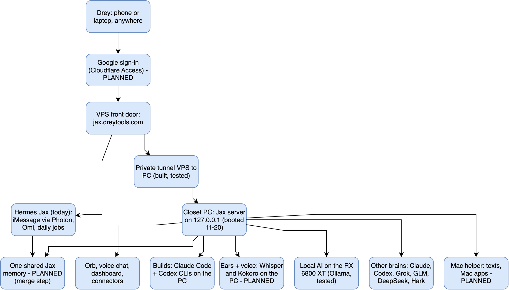

JAX
One assistant, living on the PC, reachable from anywhere
Written overnight on November 20, 2026. Step 1 is done. Everything after it needs your yes.
My vote on the name
Jax. Joint Agent Execution.
Keep your version, not ChatGPT's "Executive". "Execution" says what the code actually does: it runs Claude, Codex, Grok, GLM and DeepSeek jobs side by side. "Executive" promises judgment the software doesn't have yet. Use one name everywhere. Jax introduces himself as "Jax", and the letters live on the README.
Update, November 20 afternoon: no merge. Drey chose to keep the two assistants separate. This one is Jax Desktop on the PC; the Hermes agent on the VPS (jax.dreytools.com) stays its own thing. Step 2 is built and tested.
The setup I recommend
- The PC is the kitchenIt does the heavy work: the server, voice, ears, builds and local AI on the graphics card. 32 GB of memory, 876 GB free, a 16 GB graphics card, always on.
- The VPS is the front doorAlready reachable from anywhere, with a private tunnel into the PC. You sign in with Google and it passes you through. The PC never opens a door to the internet.
- The Mac is the handsTexts and Mac apps can't move to Windows. The PC asks the Mac to do those through the same private tunnel.

The other option was Tailscale, a private network app on the PC, the Mac and your phone. It's simple and safe, but the VPS route is already built and tested, and a second way in is one more thing to keep secure. Tailscale stays as the backup if voice feels slow through the VPS.
Steps
- Done tonight. The server started on the PC in its own folder (
X:\Workspaces\jax-pc-spike), listening on 127.0.0.1 only. The dashboard, connectors and specs pages answered 200, and the brain started on the PC's own Claude login. Four Windows bugs were found and fixed on the way, and the test server was stopped afterward. - Done November 20. A Windows task named Jax keeps the server running on 127.0.0.1:8340 and restarts it if it stops (
jax.exeandjax-server.exein Task Manager). Turn it off by creatingX:\Workspaces\jax\logs\JAX_OFF. The voice speaks a sentence in about 1 second and listening takes about 1 second per phrase. From the Mac,jax-pc openopens it at127.0.0.1:8341through a private tunnel. After a reboot it starts once someone signs in to Windows. - Reachable from anywhere. Give Jax Desktop its own address behind Google sign-in (not jax.dreytools.com, which is Hermes), then test from your phone on cell data.
- The "Joint" part. One menu of every brain you pay for, plus the free local models. Jax picks one per job and tells you which.
Blind spots
- Windows 10 Home stopped getting free security updates in October 2025. An always-on assistant that runs commands shouldn't live on an unpatched system. Turn on extended updates (ESU) or move to Windows 11 before step 3.
- The license. Dreyvis is built on Ethan Rogers' JARVIS, which bans commercial use. Selling Jax or open sourcing it under a normal license needs his permission or a rewrite of his parts.
- Home power and internet. If the PC or router is off, the kitchen is closed. The VPS can still say "Jax is offline" and keep the Hermes jobs running.
- The VPS is tight. Disk 93% full, swap full. Clear it before it becomes the front door.
- Mac-only features stay on the Mac. The PC version shows them as "needs the Mac", not as broken.
What I need from you
- A name for Jax Desktop's web address.
- Yes on Windows security updates (ESU) or moving to Windows 11.
- Go on step 3. Optional: turn on auto-login on the PC so Jax comes back by itself after a reboot.